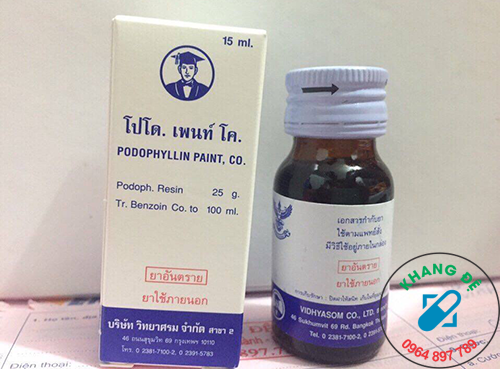

CÁCH SỬ DỤNG PODOPHYLLIN
-
Dùng nước muối sinh lý rửa sạch vết sùi mào gà sau đó lau khô.
-
Bôi thuốc mỡ mắt tetracyclin 1% ( tuýp 5g hiệu thuốc nào cũng bán ) xung quanh vùng da lành cạnh nốt sùi để tránh podophyllin
nhiễm vào vùng da lành. Podophyllin nhiễm vào da lành sẽ bị ngứa và loét da.
-
Dùng tăm ...chấm podophylin lên nốt sùi mào gà chấm từng giọt ( không được chấm nhiều chỉ chấm vừa
đủ không bôi trên diện rộng sẽ bị bỏng ) đợi 2 3 phút cho thuốc khô. Nếu bị nhiều nốt thì nên
chấm một vài nốt 1 lần .
-
Sau 4h thì rửa sạch bằng nước muối sinh lý hoặc xà bông.
CHUẨN BỊ: nước nuối sinh lý. Nat tricloric 0,9 % , thuốc mỡ tra mắt tetracylin, băng gạc cá nhân, tăm bong ngoái tai…
-
Bệnh nhân cần vệ sinh sạch nốt sùi bằng nước muối sinh lý, sau đó lau khô khu vực bị sùi mào gà.
-
Cẩn thận dung tăm ngoái tai chấm một lượng nhỏ vừa đủ dung dịch thuốc podophyllin, cẩn thận chấm lên vết sùi nếu bệnh nhân
bị nhiều nốt sùi thành đám thì cần khoanh vùng cẩn thận chấm từng vùng một. Không nên chấm một vùng
rộng để tránh tình trạng thuốc lây ra vùng da lành. Sau khi chấm thuốc podophyllin lên vết sùi mào
gà khoảng 2-3 phút thuốc sẽ khô bệnh nhân có thể dung gạc dán lại khu vực vừa chấm. Nếu những khu
vực mà bệnh nhân không thể dán gạc lên khu vực chấm thuốc thì bệnh nhân sử dụng thuốc mỡ tra mắt
tetracylin hoặc vasalen bôi xung quanh và đối điện khu vực vừa chấm thuốc nhằm tránh thuốc lây ra
vùng da lành. Sau đó bệnh nhân có thể hoạt động bình thường nhưng tốt nhất nên dung thuốc vào thời
gian nghỉ ngơi vào buổi tối.
- Rửa sạch thuốc sau khi dùng sau khoảng thời gian sau khi chấm thuốc tốt nhất là từ 2-4 giờ dung thuốc
bệnh nhân sử dụng nước sạch hoặc dung dịch nước muối sinh ký rửa sạch khu vực vừa dung thuốc. Vì
thuốc podophyllin là thuốc àm tróc lớp sừn lên khoảng thời gian từ 2-4 giờ bệnh nhân cần rửa sạch
thuốc để lâu thuốc có thể ngấm vào da và gây loét da không tốt
2 ngày bôi 1 lần (Hoặc 1 ngày bôi 1 lần và sau 4h rửa sạch)
LƯU Ý CÁCH DÙNG THUỐC PODOPHYLLIN PAINT 25%
Liều lượng Thuốc Podophyllin 25%
Ðiều trị sùi mào gà sinh dục và quanh hậu môn
Lượng dung dịch 10 - 25% podophyllin sử dụng cho mỗi đợt điều trị chỉ được phép dưới 0,5 ml. Hoặc dùng thuốc có nồng độ thấp
(ví dụ, dung dịch 5%) để điều trị những sùi mào gà lớn ở sinh dục và quanh hậu môn (lớn hơn 10 - 20 cm2).
Phải bôi dung dịch vào vùng bị bệnh và sau đó rửa sạch trong vòng4 đến 6 giờ đối với những sùi mào gà
sinh dục và quanh hậu môn, và trong vòng 2 đến 3 giờ đối với sùi mào gà ở miệng sáo nam giới (nên đi
khám với những vị trí khó bôi thuốc). Tùy theo từng người bệnh, có thể để thuốc tác dụng lâu sau khi
đã xác định được khả năng dung nạp và tuân thủ của người bệnh. Thời gian điều trị không được quá 4 -
6 giờ. Có thể điều trị nhiều đợt cách nhau một tuần, tối đa là 4 đợt; nếu không thấy rõ hiệu quả của
thuốc sau 4 đợt thì nên áp dụng những liệu pháp khác.
Ðiều trị sùi mào gà phụ nữ Hạn chế mỗi đợt điều trị ở một diện tích dưới 2 cm2 không quá 0.5 ml , có thể điều trị lặp lại
nhiều đợt cách nhau một tuần.

CHÚ Ý KHI DÙNG THUỐC BÔI TRỊ SÙI MÀO GÀ
Nguyên tắc dùng thuốc bôi ngoài chữa bệnh sùi mào gà là không được vội vàng tự ý tăng lượng thuốc, có cảm giác khó chịu
là phải ngưng thuốc để quan sát, ban đầu nên chấm 1 lượng nhỏ thuốc trước vào một nốt sùi mào gà để xem
phản ứng thuốc với vùng da như thế nào. Nếu thuốc chấm 1 lần vết sùi đã trắng và tái đi có nghĩa vết
sùi đã đang bị ohas huỷ nên áp dụng chấm 2 ngày 1 lần
TRONG QUÁ TRÌNH ĐIỀU TRỊ NÊN CHÚ Ý NHỮNG NGUYÊN TẮC SAU:
-
Nguyên tắc dùng thuốc bôi ngoài chữa bệnh sùi mào gà là không được vội vàng tự ý tăng lượng thuốc, có cảm giác khó chịu
là phải ngưng thuốc để quan sát, ban đầu nên chấm 1 lượng nhỏ thuốc trước vào một nốt sùi mào
gà để xem phản ứng thuốc với vùng da như thế nào. Nếu thuốc chấm 1 lần vết sùi đã trắng và tái
đi có nghĩa vết sùi đã đang bị ohas huỷ nên áp dụng chấm 2 ngày 1 lần
-
Dùng thuốc bôi ngoài điều trị sùi mào gà có một quy luật nhất định, thông thường hai ngày sau lần bôi đầu tiên vết sùi có
thể trắng ra và hơi có cảm giác sót, bệnh nhân không nên vội vàng tự ý tăng lượng thuốc vì nếu
tăng lượng thuốc sẽ sảy ra hiện tượng rát và đau
-
Đối với những bệnh nhân da mẫn cảm , chỉ cần bôi một lượng thuốc phù hợp, khi mới bắt đầu dùng có thể bôi mỗi ngày 1 lần.
Nếu xuất hiện cảm giác khó chịu phải ngưng dùng thuốc để quan sát ngay, nếu phản ứng phụ không
rõ ràng, có thể tiếp tục sử dụng nhưng lượng thuốc ít hơn, nếu tác dụng phụ rõ rệt, nếu phát
hiện những hiện tượng khó chịu thì nên ngừng thuốc để quan sát, xem mô đã bị phá huỷ chưa và
sau đó sử dụng lượng thuốc cho phù hợp.
Chống chỉ định
-
Dùng cẩn thận thuốc podophyllin trên những sùi mào gà ở cổ tử cung, trong niệu đạo, hậu môn ,lỗ sáo hoặc miệng; nốt ruồi,
vết chàm, hoặc bớt sùi có lông mọc.
-
Không được bôi podophyllin vào những vùng da dễ bị mủn hoặc chảy máu, sùi mào gà ở miệng, trong hậu môn, trẻ nhỏ dưới 12
tuổi.
GÍA BÁN: XXX đ
MUA NGAY
Vận chuyển & thanh toán:
HOTLINE:
0969.969.699
GIAO HÀNG TẬN NƠI
THANH TOÁN LÚC NHẬN HÀNG
CHUYỂN THUỐC & THANH TOÁN:
CHÚNG TÔI SẼ CHUYỂN HÀNG ĐẾN TẬN TAY KHÁCH HÀNG VÀ THU TIỀN TẠI NHÀ QUA DỊCH VỤ CHUYỂN PHÁT NHANH CỦA
BƯU ĐIỆN VIỆT NAM